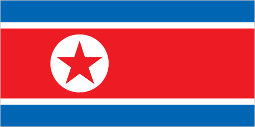
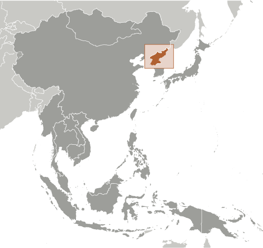
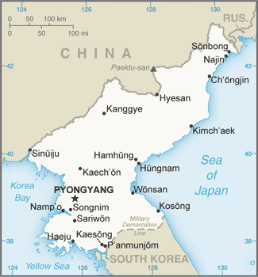

East & Southeast Asia :: KOREA, NORTH
Introduction :: KOREA, NORTH
-
An independent kingdom for much of its long history, Korea was occupied by Japan beginning in 1905 following the Russo-Japanese War. Five years later, Japan formally annexed the entire peninsula. Following World War II, Korea was split with the northern half coming under Soviet-sponsored communist control. After failing in the Korean War (1950-53) to conquer the US-backed Republic of Korea (ROK) in the southern portion by force, North Korea (DPRK), under its founder President KIM Il Sung, adopted a policy of ostensible diplomatic and economic "self-reliance" as a check against outside influence. The DPRK demonized the US as the ultimate threat to its social system through state-funded propaganda, and molded political, economic, and military policies around the core ideological objective of eventual unification of Korea under Pyongyang's control. KIM Il Sung's son, KIM Jong Il, was officially designated as his father's successor in 1980, assuming a growing political and managerial role until the elder KIM's death in 1994. KIM Jong Un was publicly unveiled as his father's successor in 2010.Following KIM Jong Il's death in 2011, KIM Jong Un quickly assumed power and has now taken on most of his father's former titles and duties. After decades of economic mismanagement and resource misallocation, the DPRK since the mid-1990s has faced chronic food shortages. In recent years, the North’s domestic agricultural production has increased, but still falls far short of producing sufficient food to provide for its entire population. The DPRK began to ease restrictions to allow semi-private markets, starting in 2002, but has made few other efforts to meet its goal of improving the overall standard of living. North Korea's history of regional military provocations; proliferation of military-related items; long-range missile development; WMD programs including tests of nuclear devices in 2006, 2009, 2013, 2016, and 2017; and massive conventional armed forces are of major concern to the international community and have limited the DPRK’s international engagement, particularly economically. The regime abides by a policy calling for the simultaneous development of its nuclear weapons program and its economy.
Geography :: KOREA, NORTH
-
Eastern Asia, northern half of the Korean Peninsula bordering the Korea Bay and the Sea of Japan, between China and South Korea40 00 N, 127 00 EAsiatotal: 120,538 sq kmland: 120,408 sq kmwater: 130 sq kmcountry comparison to the world: 100slightly larger than Virginia; slightly smaller than Mississippitotal: 1,607 kmborder countries (3): China 1,352 km, South Korea 237 km, Russia 18 km2,495 kmterritorial sea: 12 nmexclusive economic zone: 200 nmnote: military boundary line 50 nm in the Sea of Japan and the exclusive economic zone limit in the Yellow Sea where all foreign vessels and aircraft without permission are bannedtemperate, with rainfall concentrated in summer; long, bitter wintersmostly hills and mountains separated by deep, narrow valleys; wide coastal plains in west, discontinuous in eastmean elevation: 600 melevation extremes: lowest point: Sea of Japan 0 mhighest point: Paektu-san 2,744 mcoal, iron ore, limestone, magnesite, graphite, copper, zinc, lead, precious metals, hydropoweragricultural land: 21.8%arable land 19.5%; permanent crops 1.9%; permanent pasture 0.4%forest: 46%other: 32.2% (2011 est.)14,600 sq km (2012)population concentrated in the plains and lowlands; least populated regions are the mountainous provinces adjacent to the Chinese border; largest concentrations are in the western provinces, particularly the municipal district of Pyongyang, and around Hungnam and Wonsan in the eastlate spring droughts often followed by severe flooding; occasional typhoons during the early fallvolcanism: Changbaishan (2,744 m) (also known as Baitoushan, Baegdu or P'aektu-san), on the Chinese border, is considered historically activewater pollution; inadequate supplies of potable water; waterborne disease; deforestation; soil erosion and degradationparty to: Antarctic Treaty, Biodiversity, Climate Change, Climate Change-Kyoto Protocol, Desertification, Environmental Modification, Hazardous Wastes, Ozone Layer Protection, Ship Pollutionsigned, but not ratified: Law of the Seastrategic location bordering China, South Korea, and Russia; mountainous interior is isolated and sparsely populated
People and Society :: KOREA, NORTH
-
25,248,140 (July 2017 est.)country comparison to the world: 51noun: Korean(s)adjective: Koreanracially homogeneous; there is a small Chinese community and a few ethnic JapaneseKoreantraditionally Buddhist and Confucianist, some Christian and syncretic Chondogyo (Religion of the Heavenly Way)note: autonomous religious activities now almost nonexistent; government-sponsored religious groups exist to provide illusion of religious freedom0-14 years: 20.78% (male 2,670,884/female 2,576,846)15-24 years: 15.59% (male 1,982,045/female 1,955,220)25-54 years: 44.28% (male 5,608,520/female 5,572,000)55-64 years: 9.77% (male 1,166,680/female 1,301,201)65 years and over: 9.56% (male 826,735/female 1,588,009) (2017 est.)total dependency ratio: 44.5youth dependency ratio: 30.5elderly dependency ratio: 14potential support ratio: 7.1 (2015 est.)total: 34 yearsmale: 32.5 yearsfemale: 35.6 years (2017 est.)country comparison to the world: 860.53% (2017 est.)country comparison to the world: 15414.6 births/1,000 population (2017 est.)country comparison to the world: 1329.3 deaths/1,000 population (2017 est.)country comparison to the world: 610 migrant(s)/1,000 population (2017 est.)country comparison to the world: 87population concentrated in the plains and lowlands; least populated regions are the mountainous provinces adjacent to the Chinese border; largest concentrations are in the western provinces, particularly the municipal district of Pyongyang, and around Hungnam and Wonsan in the easturban population: 61.2% of total population (2017)rate of urbanization: 0.8% annual rate of change (2015-20 est.)PYONGYANG (capital) 2.863 million (2015)at birth: 1.05 male(s)/female0-14 years: 1.03 male(s)/female15-24 years: 1.02 male(s)/female25-54 years: 1.01 male(s)/female55-64 years: 0.9 male(s)/female65 years and over: 0.53 male(s)/femaletotal population: 0.94 male(s)/female (2016 est.)82 deaths/100,000 live births (2015 est.)country comparison to the world: 79total: 22.1 deaths/1,000 live birthsmale: 24.6 deaths/1,000 live birthsfemale: 19.5 deaths/1,000 live births (2017 est.)country comparison to the world: 73total population: 70.7 yearsmale: 66.9 yearsfemale: 74.8 years (2017 est.)country comparison to the world: 1571.95 children born/woman (2017 est.)country comparison to the world: 12778.2%note: percent of women aged 20-49 (2014)2.78 physicians/1,000 population (2011)13.2 beds/1,000 population (2012)improved:urban: 99.9% of populationrural: 99.4% of populationtotal: 99.7% of populationunimproved:urban: 0.1% of populationrural: 0.6% of populationtotal: 0.3% of population (2015 est.)improved:urban: 87.9% of populationrural: 72.5% of populationtotal: 81.9% of populationunimproved:urban: 12.1% of populationrural: 27.5% of populationtotal: 18.1% of population (2015 est.)NANA6.8% (2016)country comparison to the world: 16315.2% (2012)country comparison to the world: 46NAdefinition: age 15 and over can read and writetotal population: 100%male: 100%female: 100% (2015 est.)total: 11 yearsmale: 11 yearsfemale: 11 years (2015)
Government :: KOREA, NORTH
-
conventional long form: Democratic People's Republic of Koreaconventional short form: North Korealocal long form: Choson-minjujuui-inmin-konghwaguklocal short form: Chosonabbreviation: DPRKetymology: derived from the Chinese name for Goryeo, which was the Korean dynasty that united the peninsula in the 10th century A.D.; the North Korean name "Choson" means "[Land of the] Morning Calm"single-party state; official state ideology of "Juche" or "national self-reliancename: Pyongyanggeographic coordinates: 39 01 N, 125 45 Etime difference: UTC+8.5 (13.5 hours ahead of Washington, DC, during Standard Time)note: on 15 August 2015, North Korea reverted to UTC+8.5, a time zone that had been observed during pre-colonial times9 provinces (do, singular and plural) and 2 cities (si, singular and plural)provinces: Chagang, Hambuk (North Hamgyong), Hamnam (South Hamgyong), Hwangbuk (North Hwanghae), Hwangnam (South Hwanghae), Kangwon, P'yongbuk (North Pyongan), P'yongnam (South Pyongan), Ranggangcities: Namp'o, P'yongyang, Rasonnote: Namp'o is sometimes designated as a metropolitan city, P'yongyang as a capital city, and Rason as a special city15 August 1945 (from Japan)Founding of the Democratic People's Republic of Korea (DPRK), 9 September (1948)previous 1948, 1972; latest adopted 1998; revised 2009, 2012, 2013 (2016)civil law system based on the Prussian model; system influenced by Japanese traditions and Communist legal theoryhas not submitted an ICJ jurisdiction declaration; non-party state to the ICCtcitizenship by birth: nocitizenship by descent only: at least one parent must be a citizen of North Koreadual citizenship recognized: noresidency requirement for naturalization: unknown17 years of age; universal and compulsorychief of state: Supreme People's Assembly President KIM Yong Nam (since 5 September 1998); note - functions as the technical head of state and performs related duties, such as receiving ambassadors' credentialshead of government: State Affairs Commission Chairman KIM Jong Un (since 17 December 2011); note - functions as the commander-in-chief and chief executivecabinet: Cabinet or Naegak members appointed by the Supreme People's Assembly except the Minister of People's Armed Forceselections/appointments: chief of state and premier indirectly elected by the Supreme People's Assembly; election last held on 9 March 2014 (next election NA)election results: KIM Jong Un reelected unopposednote: the Korean Workers' Party continues to list deceased leaders KIM Il Sung and KIM Jong Il as Eternal President and Eternal General Secretary respectivelydescription: unicameral Supreme People's Assembly or Ch'oego Inmin Hoeui (687 seats; members directly elected by absolute majority vote to serve 5-year terms); note - the Korean Workers' Party selects all candidateselections: last held on 9 March 2014 (next to be held in March 2019)election results: percent of vote by party - NA; seats by party - KWP 607, KSDF 50, Chondoist Chongu Party 22, Chongryon 5, religious associations 3; ruling party approves a list of candidates who are elected without opposition; KWP, KSDP, Chondoist Chongu Party, and Chongryon are part of the DFRF; a token number of seats are reserved for minor partieshighest court(s): Supreme Court or Central Court (consists of one judge and 2 "People's Assessors" or for some cases, 3 judges)judge selection and term of office: judges elected by the Supreme People's Assembly for 5-year termssubordinate courts: lower provincial courts as determined by the Supreme People's Assemblymajor parties: Democratic Front for the Reunification of the Fatherland or DFRFKorean Workers' Party or KWP [KIM Jong Un]General Association of Korean Residents in Japan or Chongryonminor parties: Chondoist Chongu Party (under KWP control)Social Democratic Party or KSDP [KIM Yong Dae] (under KWP control)noneARF, FAO, G-77, ICAO, ICRM, IFAD, IFRCS, IHO, IMO, IMSO, IOC, IPU, ISO, ITSO, ITU, NAM, UN, UNCTAD, UNESCO, UNIDO, UNWTO, UPU, WFTU (NGOs), WHO, WIPO, WMOnone; North Korea has a Permanent Mission to the UN in New Yorknone; note - Swedish Embassy in Pyongyang represents the US as consular protecting powerthree horizontal bands of blue (top), red (triple width), and blue; the red band is edged in white; on the hoist side of the red band is a white disk with a red five-pointed star; the broad red band symbolizes revolutionary traditions; the narrow white bands stand for purity, strength, and dignity; the blue bands signify sovereignty, peace, and friendship; the red star represents socialismred star, chollima (winged horse); national colors: red, white, bluename: "Aegukka" (Patriotic Song)lyrics/music: PAK Se Yong/KIM Won Gyunnote: adopted 1947; both North Korea's and South Korea's anthems share the same name and have a vaguely similar melody but have different lyrics; the North Korean anthem is also known as "Ach'imun pinnara" (Let Morning Shine)
Economy :: KOREA, NORTH
-
North Korea, one of the world's most centrally directed and least open economies, faces chronic economic problems. Industrial capital stock is nearly beyond repair as a result of years of underinvestment, shortages of spare parts, and poor maintenance. Large-scale military spending and development of its ballistic missile and nuclear program severely draws off resources needed for investment and civilian consumption. Industrial and power outputs have stagnated for years at a fraction of pre-1990 levels. Frequent weather-related crop failures aggravated chronic food shortages caused by on-going systemic problems, including a lack of arable land, collective farming practices, poor soil quality, insufficient fertilization, and persistent shortages of tractors and fuel.The mid 1990s were marked by severe famine and widespread starvation. Significant food aid was provided by the international community through 2009. Since that time, food assistance has declined significantly. In the last few years, domestic corn and rice production has improved, although domestic production does not fully satisfy demand. A large portion of the population continues to suffer from prolonged malnutrition and poor living conditions. Since 2002, the government has allowed semi-private markets to begin selling a wider range of goods, allowing North Koreans to partially make up for diminished public distribution system rations. It also implemented changes in the management process of communal farms in an effort to boost agricultural output.In December 2009, North Korea carried out a redenomination of its currency, capping the amount of North Korean won that could be exchanged for the new notes, and limiting the exchange to a one-week window. A concurrent crackdown on markets and foreign currency use yielded severe shortages and inflation, forcing Pyongyang to ease the restrictions by February 2010. In response to the sinking of the South Korean warship Cheonan and the shelling of Yeonpyeong Island in 2010, South Korea’s government cut off most aid, trade, and bilateral cooperation activities. In February 2016, South Korea ceased its remaining bilateral economic activity by closing the Kaesong Industrial Complex in response to North Korea’s fourth nuclear test a month earlier. This nuclear test and another in September 2016 resulted in two United Nations Security Council Resolutions that targeted North Korea’s foreign currency earnings, particularly coal and other mineral exports. Over the last decade, China has been North Korea’s primary trading partner.The North Korean Government continues to stress its goal of improving the overall standard of living, but has taken few steps to make that goal a reality for its populace. In 2016, the regime used two mass mobilizations — one totaling 70 days and another 200 days — to spur the population to increase production and complete construction projects quickly. The regime released a five-year economic development strategy in May 2016 that outlined plans for promoting growth across sectors. Firm political control remains the government’s overriding concern, which likely will inhibit formal changes to North Korea’s current economic system.$40 billion (2015 est.)$40 billion (2014 est.)$40 billion (2013 est.)note: data are in 2014 US dollars;North Korea does not publish reliable National Income Accounts data; the data shown are derived from purchasing power parity (PPP) GDP estimates for North Korea that were made by Angus MADDISON in a study conducted for the OECD; his figure for 1999 was extrapolated to 2015 using estimated real growth rates for North Korea's GDP and an inflation factor based on the US GDP deflator; the results were rounded to the nearest $10 billion.$28 billion (2013 est.)-1.1% (2015 est.)1% (2014 est.)1.1% (2013 est.)country comparison to the world: 198$1,700 (2015 est.)$1,800 (2014 est.)$1,800 (2013 est.)note: data are in 2014 US dollarscountry comparison to the world: 215NA%household consumption: NA%government consumption: NA%investment in fixed capital: NA%investment in inventories: NA%exports of goods and services: 5.9%imports of goods and services: -11.1% (2014 est.)agriculture: 25.3%industry: 41.1%services: 33.6% (2016 est.)rice, corn, potatoes, wheat, soybeans, pulses, beef, pork, eggsmilitary products; machine building, electric power, chemicals; mining (coal, iron ore, limestone, magnesite, graphite, copper, zinc, lead, and precious metals), metallurgy; textiles, food processing; tourism3% (2016 est.)country comparison to the world: 8014 millionnote: estimates vary widely (2014 est.)country comparison to the world: 42agriculture: 37%industry and services: 63% (2008 est.)25.6% (2013 est.)25.5% (2012 est.)country comparison to the world: 193NA%lowest 10%: NA%highest 10%: NA%revenues: $3.2 billionexpenditures: $3.3 billion (2007 est.)11.4% of GDPnote: excludes earnings from state-operated enterprises (2007 est.)country comparison to the world: 208-0.4% of GDP (2007 est.)country comparison to the world: 55calendar yearNA%$2.985 billion (2016 est.)$2.908 billion (2015 est.)country comparison to the world: 122minerals, metallurgical products, manufactures (including armaments), textiles, agricultural and fishery productsChina 85.6% (2016)$3.752 billion (2016 est.)$3.711 billion (2015 est.)country comparison to the world: 130petroleum, coking coal, machinery and equipment, textiles, grainChina 90.3% (2016)$5 billion (2013 est.)country comparison to the world: 134North Korean won (KPW) per US dollar (average market rate)130 (2016 est.)130 (2015 est.)98.5 (2013 est.)155.5 (2012 est.)
Energy :: KOREA, NORTH
-
population without electricity: 18,400,000electrification - total population: 30%electrification - urban areas: 41%electrification - rural areas: 13% (2013)13.41 billion kWh (2015 est.)country comparison to the world: 8811.24 billion kWh (2015 est.)country comparison to the world: 900 kWh (2016 est.)country comparison to the world: 1540 kWh (2016 est.)country comparison to the world: 16510 million kW (2015 est.)country comparison to the world: 6145% of total installed capacity (2015 est.)country comparison to the world: 1600% of total installed capacity (2015 est.)country comparison to the world: 12055% of total installed capacity (2015 est.)country comparison to the world: 340% of total installed capacity (2015 est.)country comparison to the world: 1900 bbl/day (2016 est.)country comparison to the world: 1530 bbl/day (2014 est.)country comparison to the world: 14610,640 bbl/day (2014 est.)country comparison to the world: 740 bbl (1 January 2017 es)country comparison to the world: 15211,270 bbl/day (2014 est.)country comparison to the world: 10018,000 bbl/day (2015 est.)country comparison to the world: 1430 bbl/day (2014 est.)country comparison to the world: 1675,976 bbl/day (2014 est.)country comparison to the world: 1600 cu m (2014 est.)country comparison to the world: 1530 cu m (2014 est.)country comparison to the world: 1970 cu m (2014 est.)country comparison to the world: 1300 cu m (2014 est.)country comparison to the world: 1440 cu m (1 January 2014 es)country comparison to the world: 15650 million Mt (2013 est.)country comparison to the world: 59
Communications :: KOREA, NORTH
-
total subscriptions: 1.18 millionsubscriptions per 100 inhabitants: 5 (July 2016 est.)country comparison to the world: 70total: 3.24 millionsubscriptions per 100 inhabitants: 13 (July 2016 est.)country comparison to the world: 142general assessment: adequate system; nationwide fiber-optic network; mobile-cellular service expanded beyond Pyongyangdomestic: fiber-optic links installed down to the county level; telephone directories unavailable; mobile service launched in late 2008 for the Pyongyang area and considerable progress in expanding to other parts of the country sinceinternational: country code - 850; satellite earth stations - 2 (1 Intelsat - Indian Ocean, 1 Russian - Indian Ocean region); other international connections through Moscow and Beijing (2015)no independent media; radios and TVs are pre-tuned to government stations; 4 government-owned TV stations; the Korean Workers' Party owns and operates the Korean Central Broadcasting Station, and the state-run Voice of Korea operates an external broadcast service; the government prohibits listening to and jams foreign broadcasts (2015).kp
Transportation :: KOREA, NORTH
-
number of registered air carriers: 1inventory of registered aircraft operated by air carriers: 17annual passenger traffic on registered air carriers: 223,418annual freight traffic on registered air carriers: 1,574,719 mt-km (2015)P (2016)82 (2013)country comparison to the world: 67total: 39over 3,047 m: 32,438 to 3,047 m: 221,524 to 2,437 m: 8914 to 1,523 m: 2under 914 m: 4 (2017)total: 432,438 to 3,047 m: 31,524 to 2,437 m: 17914 to 1,523 m: 15under 914 m: 8 (2013)23 (2013)oil 6 km (2013)total: 7,435 kmstandard gauge: 7,435 km 1.435-m gauge (5,400 km electrified)note: figures are approximate; some narrow-gauge railway also exists (2014)country comparison to the world: 29total: 25,554 kmpaved: 724 kmunpaved: 24,830 km (2006)country comparison to the world: 1002,250 km (most navigable only by small craft) (2011)country comparison to the world: 38total: 158by type: bulk carrier 6, cargo 131, carrier 1, chemical tanker 1, container 4, passenger/cargo 1, petroleum tanker 12, refrigerated cargo 2foreign-owned: 13 (Belgium 1, China 3, Nigeria 1, Singapore 1, South Korea 1, Syria 4, UAE 2)registered in other countries: 6 (Mongolia 1, Sierra Leone 2, unknown 3) (2010)country comparison to the world: 38major seaport(s): Ch'ongjin, Haeju, Hungnam (Hamhung), Namp'o, Senbong, Songnim, Sonbong (formerly Unggi), Wonsan
Military and Security :: KOREA, NORTH
-
North Korean People's Army: Ground Forces, Navy, Air Force; civil security forces (2005)17 years of age for compulsory male and female military service; service obligation 10 years for men, to age 23 for women (2017)
Transnational Issues :: KOREA, NORTH
-
risking arrest, imprisonment, and deportation, tens of thousands of North Koreans cross into China to escape famine, economic privation, and political oppression; North Korea and China dispute the sovereignty of certain islands in Yalu and Tumen Rivers; Military Demarcation Line within the 4-km-wide Demilitarized Zone has separated North from South Korea since 1953; periodic incidents in the Yellow Sea with South Korea which claims the Northern Limiting Line as a maritime boundary; North Korea supports South Korea in rejecting Japan's claim to Liancourt Rocks (Tok-do/Take-shima)IDPs: undetermined (periodic flooding and famine during mid-1990s) (2017)current situation: North Korea is a source country for men, women, and children who are subjected to forced labor and sex trafficking; many North Korean workers recruited to work abroad under bilateral contracts with foreign governments, most often Russia and China, are subjected to forced labor and do not have a choice in the work the government assigns them, are not free to change jobs, and face government reprisals if they try to escape or complain to outsiders; tens of thousands of North Koreans, including children, held in prison camps are subjected to forced labor, including logging, mining, and farming; many North Korean women and girls, lured by promises of food, jobs, and freedom, have migrated to China illegally to escape poor social and economic conditions only to be forced into prostitution, domestic service, or agricultural work through forced marriagestier rating: Tier 3 - North Korea does not fully comply with minimum standards for the elimination of trafficking and is not making significant efforts to do so; the government continued to participate in human trafficking through its use of domestic forced labor camps and the provision of forced labor to foreign governments through bilateral contracts; officials did not demonstrate any efforts to address human trafficking through prosecution, protection, or prevention measures; no known investigations, prosecutions, or convictions of trafficking offenders or officials complicit in trafficking-related offenses were conducted; the government also made no efforts to identify or protect trafficking victims and did not permit NGOs to assist victims (2015)at present there is insufficient information to determine the current level of involvement of government officials in the production or trafficking of illicit drugs, but for years, from the 1970s into the 2000s, citizens of the Democratic People's Republic of (North) Korea (DPRK), many of them diplomatic employees of the government, were apprehended abroad while trafficking in narcotics; police investigations in Taiwan and Japan in recent years have linked North Korea to large illicit shipments of heroin and methamphetamine